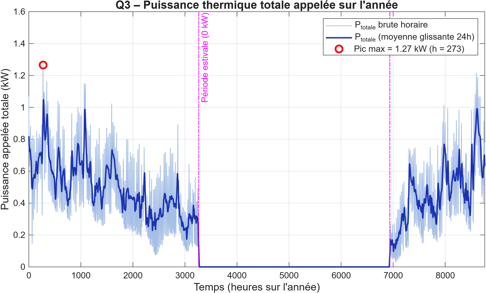

Étude de réseau de chaleur · MATLAB
Modélisation MATLAB d’un plancher chauffant régulé par loi d’eau.
Exercice de modélisation sous MATLAB : comment la météo parisienne, l’inertie de deux bâtiments et la régulation d’un plancher chauffant influencent-elles la puissance appelée ?

Pourquoi cette modélisation ?
Simuler la régulation du plancher chauffant et la puissance appelée
Dans cet exercice, la production thermique alimente deux bâtiments par un réseau primaire et des planchers chauffants. La source de chaleur n’est pas imposée et les pertes dans les canalisations sont négligées : il s’agit d’un modèle pédagogique simplifié, pas du dimensionnement d’un réseau réel.
La question étudiée est celle de la demande : comment la météo de Paris, les caractéristiques thermiques des bâtiments et la loi d’eau influencent-elles les températures intérieures et les appels de puissance au fil de l’année ?
Démarche
Simuler le fonctionnement thermique à pas horaire
Le modèle MATLAB combine bilan thermique des bâtiments, inertie, apports, température extérieure, ventilation et plancher chauffant. Une loi d’eau ajuste la température de départ à la météo parisienne sur une année complète.
- Vérification de la convergence thermique et étude du refroidissement passif.
- Analyse de sensibilité à l’inertie et aux déperditions des bâtiments.
- Simulation des températures, des régimes hydrauliques et de la puissance appelée.
- Comparaison de variantes de régulation thermostatique et d’inertie.
Résultat notable
Le scénario de référence atteint un pic de 1,27 kW
J’ai écrit les scripts MATLAB pour comparer l’inertie et les déperditions, simuler les régimes hydrauliques, puis tester des variantes de régulation thermostatique. Cette valeur est celle du modèle simplifié, sous ses hypothèses de calcul.
Livrables
Les scripts MATLAB, le rapport de modélisation et les figures de simulation documentent les hypothèses et les variantes. Des éléments complémentaires peuvent être transmis sur demande par e-mail.
Demander les détails du projet